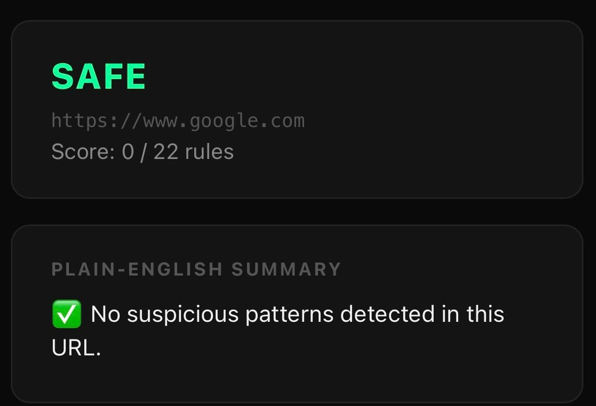

URLs in my evaluation set, including phishing examples and legitimate controls.
QR phishing detection
Check the link behind a QR code.
I built ScanSafe to see where a code leads before I open it. Scan a code or paste a link. The app checks the address against 22 rules and explains what it finds.
Grambling State University · AIoT Lab
SAFEScore 0
www.google.comNo suspicious patterns detected in this URL.
The demo
Watch me scan a link.
Read the transcript
I built ScanSafe because a QR code hides the one thing I want to check first: where the link goes. Let me show you how I use it.
I open ScanSafe, tap Scan QR Code, and point my camera at the code. Here’s a photo I took while testing it on my laptop. Once the code is in view, ScanSafe reads the address and shows me what it found.
I can also paste a link and select Scan. In this test, the Google address scored zero. Look at the other address. What looks like the last letter in PayPal is actually the number one. ScanSafe flagged that, along with the word ‘login’ in the link.
When I get a warning, I read the reasons before deciding what to do. A low score can still miss something. To try it yourself, choose ‘Try ScanSafe’ on this page and run one of the examples.
Test cases
What did the scanner catch?
Compare three results from my original phone tests.
The Google address scored zero. None of the rules found a warning sign.

April 2026 evaluation
How the rules performed.
I tested the prototype on a small set of links. A clean-looking address can still lead to a phishing page.
Clearly phishing URLs in the tested group received the high-risk verdict.
Average time the rules took to score one address after decoding.